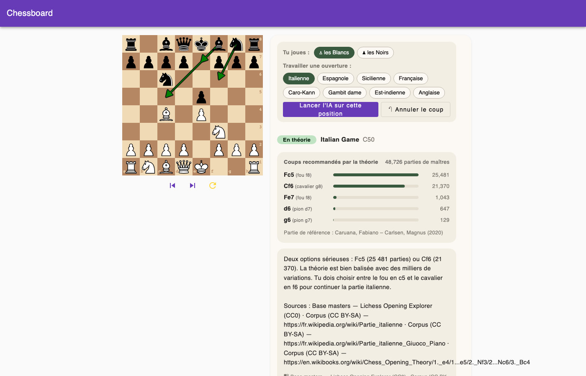
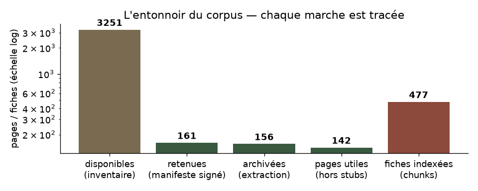
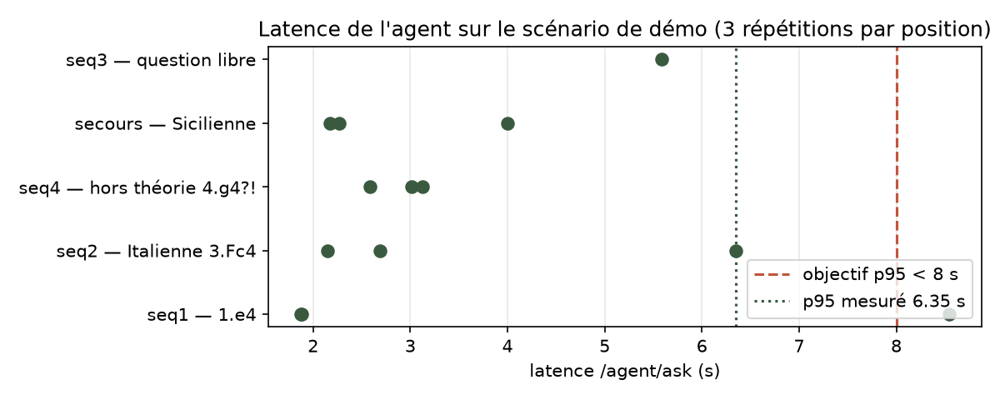

Accompagner les jeunes espoirs pendant leur entraînement autonome
Richard Hugou
IA Engineer — Soutenance de projet — Août 2026
• 60 000 licenciés, dont ~60 % de jeunes espoirs.
• Quelques centaines d'entraîneurs qualifiés sur le territoire.
• Le goulot d'étranglement est humain : impossible d'offrir un suivi quotidien individualisé le soir ou entre les rondes de tournoi.
• Prépare ses championnats et veut réviser son répertoire ce soir.
• Son entraîneur n'est pas disponible.
• Mission du POC : un répétiteur interactif disponible 24/7 pour l'accompagner pendant qu'elle joue.

Scénario complet en conditions réelles (~45 s) :
Loom · 3-4 coups · Conseils RAG · Sortie de théorie Stockfish
L'élève choisit son camp (ex: les Blancs). L'échiquier s'oriente immédiatement et l'ouverture cible (Partie Italienne) est sélectionnée.
L'élève joue ses coups sur le plateau. L'agent joue automatiquement la réplique des maîtres Lichess la plus fréquente (1.e4 e5, 2.Cf3 Cc6).
À 3.Fc4, « Demander à Chessbot » affiche les coups des maîtres, les flèches tactiques, la synthèse sourcée et la vidéo YouTube associée.
Sur un coup hors théorie (ex: 4.g4?!), l'agent bascule instantanément sur Stockfish pour fournir une évaluation objective chiffrée (-1,47 cp).
Principe directeur : les faits proviennent des moteurs spécialisés, le LLM intervient uniquement pour la formulation.
La chaîne transmet la position standardisée de bout en bout sans ambiguïté.
Milvus stocke la connaissance vectorisée ; MongoDB gère le cache applicatif transverse.
Le seuil de parties maîtres décide du passage théorie/moteur de manière fiable.
Coup 3.Fc4 → Lichess fournit Fc5/Cf6 → Milvus extrait les fiches du rayon → le LLM rédige le plan stratégique.
Coup 4.g4?! → < 5 parties de référence → bifurcation immédiate vers Stockfish → évaluation -1,47 cp.
4 sources documentaires complémentaires :
• Référentiel des ouvertures : nomenclature et codes ECO officiels
• Lichess Explorer : base de 2 M+ parties et statistiques maîtres
• Wikipédia / Wikibooks : corpus encyclopédique structuré
• YouTube : métadonnées et horodatages des cours vidéo
Pipeline ETL rejouable et idempotent :
extraction (manifeste signé) → nettoyage → fiches → vecteurs → Milvus
Périmètre validé : 156 pages extraites → 477 fiches structurées (95 positions FEN calculées, 0 échec).

Entonnoir réel du corpus (notebook 03) : 3 251 pages disponibles → 161 retenues → 477 fiches.
Modèle multilingue (1024 dimensions) alignant naturellement les concepts en français et anglais.
Recherche restreinte au rayon actif : empêche la récupération de sources hors du périmètre concerné.
Recherche exécutée en 7 à 11 ms · Séparation sémantique cible/hors-sujet portée de 0,29 à 0,50.
| Indicateur clé | Objectif | Résultat mesuré |
|---|---|---|
| Coups illégaux en sortie | 0 | 0 sur 56 testés |
| recall@5 (Gold Set 25 questions) | >= 0,80 | 1,0 (tracé MLflow) |
| Abstention sur les pièges | 5 / 5 | 5 / 5 (filtrage par rayon) |
| Réponses avec sources valides | 100 % | 100 % (garanti par pipeline) |
| Recherche vectorielle Milvus | < 100 ms | 7–11 ms (p95) |
| Latence Cloud GPU T4 (avec LLM) | p95 < 8 s | 1,81 s (p50) · 2,41 s (p95) |
| Latence Local CPU (avec LLM) | p95 < 8 s | 2,69 s (p50) · 6,35 s (p95) |
| Coût d'API LLM | 0 € | 0,00 € (modèle open source) |

Latences mesurées sur le scénario de démo (notebook 05, 3 répétitions par position).
• Séparation nette : compute API réplicable à volonté, bases mutualisées, pool GPU isolé.
• Hugging Face Spaces
• GPU NVIDIA T4 (16 Go VRAM)
• Stack complète embarquée avec Ollama CUDA, Stockfish et Milvus Lite
• Déploiement automatisé par CI/CD GitHub Actions
• Facturation à l'usage : 0,40 $/h
• API FastAPI : Stateless → réplication horizontale simple.
• Stockfish : CPU parallélisable (~0,8 s / coup).
• Milvus & MongoDB : Services partagés légers (7–11 ms).
• Inférence LLM : Goulot principal → dimensionné par le pool GPU.
Hypothèse d'utilisation : 30 analyses / utilisateur / mois.
| Scénario | Utilisateurs | Volume mensuel | Débit moyen | Cible GPU |
|---|---|---|---|---|
| Scénario 1 % | 600 users | 18 000 req/mois | ~0,25 req/min | 1 GPU partagé |
| Scénario 5 % | 3 000 users | 90 000 req/mois | ~1,25 req/min | 1 à 2 GPU |
| Scénario 10 % | 6 000 users | 180 000 req/mois | ~2,50 req/min | 2 à 3 GPU (autoscaling) |
| Poste de coût | Composant | Estimation mensuelle |
|---|---|---|
| Inférence GPU | Pool GPU (instances T4 / L4 à l'usage) | ~150 à 280 € / mois |
| API & Compute | Instances FastAPI stateless (CPU / RAM) | ~30 à 50 € / mois |
| Bases de données | Milvus managé + MongoDB managé | ~50 à 80 € / mois |
| Stockage & Logs | Métriques, monitoring, sauvegardes | ~20 € / mois |
| APIs Externes | Modèles open source + YouTube API | 0,00 € |
| TOTAL OPEX | Service en production (3 000 users) | ~250 à 430 € / mois |
• Développement POC : ~25 à 30 jours-homme.
• Stack 100 % open source : aucune redevance de licence logicielle propriétaire.
• Maîtrise budgétaire : le coût reste dominé par le compute GPU ajustable selon l'usage.
• L'agent identifie l'ouverture jouée sur l'échiquier.
• Il interroge l'API officielle YouTube Data pour extraire les vidéos explicatives pertinentes.
• Affichage direct : titre officiel, nom de la chaîne, durée et lien cliquable.
• Conformité stricte : exploitation des métadonnées seules, aucun téléchargement de flux.
L'élève dispose immédiatement de cours vidéo de grands maîtres adaptés à son ouverture sans quitter l'interface d'entraînement.
Recommandation globale par nom d'ouverture :
« Voici 3 vidéos sur la Partie Italienne. »
Recommandation directe au timestamp exact :
« Cette position exacte est expliquée à 4:32 dans cette vidéo. »
On part de la vidéo pour extraire les positions jouées et les transmettre à l'agent existant via la clé FEN.
• Reconstruire d'abord les coups cités dans le transcript textuel via python-chess.
• Utiliser la vision par ordinateur 2D uniquement pour confirmer la position et caler l'horodatage exact (~3 min CPU / vidéo).
• Build MVP : 30 à 40 jours-homme (budget estimé : 15 à 20 k€).
• Coût unitaire Run : ~0,10 à 0,15 € / vidéo (à 1 000 vidéos/mois).
• Statut : Étude de faisabilité livrée — développement hors POC.
• Risque juridique (CGU YouTube & droit d'auteur) atténué par le traitement des chaînes partenaires sous licence.
• Échiquiers 3D / angles inclinés exclus du MVP (réservés à une version V2).
Reconnaissance théorique immédiate, explications pédagogiques sourcées, bascule moteur Stockfish.
Orchestration déterministe LangGraph, Stockfish UCI, base vectorielle Milvus, cache transverse MongoDB.
Pipeline ETL rejouable (4 sources, 477 fiches structurées, 95 FEN de référence validés).
0 coup illégal sur 56 positions, latence sous 2,5 s sur GPU Cloud T4 (p95 = 2,41 s).
Conteneurisation locale reproductible (2 min 09) et vitrine cloud GPU opérationnelle sur Hugging Face Spaces.
Note de cadrage, architecture MCP, faisabilité technique et modèle de coûts formalisés.
→ Place à la démonstration en direct et aux échanges.
Parcours nominal (Partie Italienne), demande de conseils sourcés, sortie de théorie sur Stockfish et exploration du code.
http://localhost:4200
trikwi-p13-agent-echecs.hf.space
Richard Hugou
IA Engineer — Cavalier Data
Dépôt : https://github.com/richardhugou/p13-agent-ia-echecs
Vitrine : https://trikwi-p13-agent-echecs.hf.space